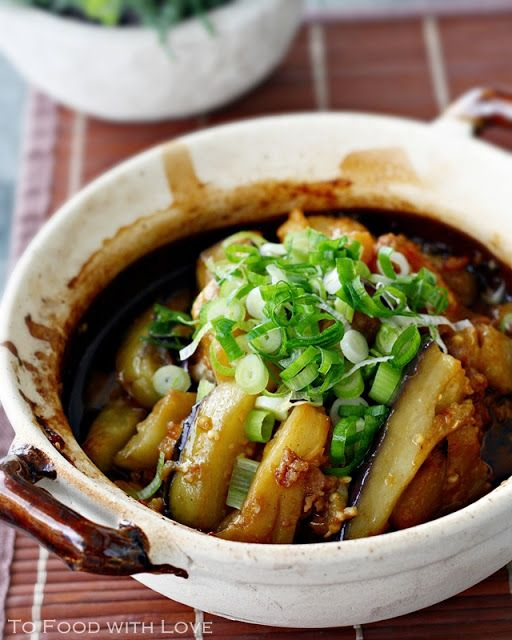

Claypot Eggplant

Savory Eggplant like no other
I want this nowwww!
Ingredients Needed
- 4 oz. pork
- 2 tablespoons cornstarch
- 1 1/2 pounds eggplant
- 1 1/2 cups canola oil for frying
- 3 slices of minced ginger
- 4 cloves of chopped garlic
- 2 scallions
- 1 oz. Chinese salted fish
- 1 teaspoon sugar
- 1 teaspoon Chinese black vinegar
- 1 teaspoon dark soy sauce
- 4 teaspoons light soy sauce
- 1/2-3/4 cup water
- Toss your pork (or chicken) with 1/2 teaspoon cornstarch and set aside. Wash the eggplants and dry them off with a clean kitchen towel. Trim off the ends, and cut the eggplant into 2-inch x 1/2-inch pieces. Add the eggplant pieces to a large zip top bag and toss with 2 tablespoons cornstarch until evenly coated.
- Heat 1 1/2 cups canola oil in a small pot (the oil should be about 3/4-inch deep) over medium heat. To test the oil temperature, stick a bamboo or wooden chopstick in the oil. If you see a good deal of bubbles forming around the chopstick, the oil is ready for frying. Fry the eggplant in batches, cooking each batch for about 2 minutes. Drain on paper towels and set aside.
- Heat 1 tablespoon oil in your wok over medium heat. Add the ginger, garlic and the white parts of the scallions. Cook for 30 seconds, and then add the pork (or chicken) and the salted fish (or anchovies). Stir-fry until the meat is cooked through. Now add the eggplant, sugar, vinegar, dark soy sauce, light soy sauce, and the green parts of the scallion. Also add 1/2 cup water.
- Turn up the heat to high and mix everything together. Because of the cornstarch used to coat the eggplant, the liquid should thicken into a sauce. Add a little more water if necessary to reach the desired sauce consistency. This dish should have some sauce, but shouldn't be swimming in liquid. Also, remember not to cook the eggplant for too long; it shouldn't lose its shape. Once the sauce is thickened, serve with steamed rice!